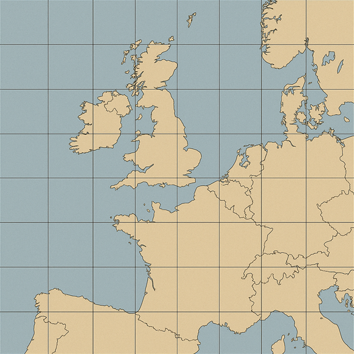
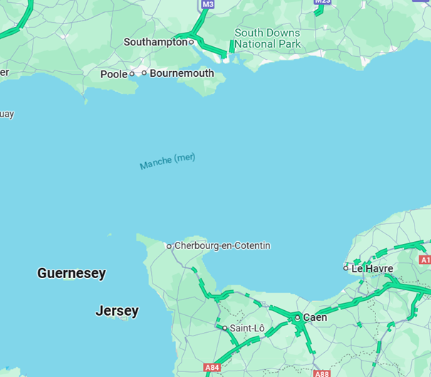

Question: 1/15
🗺️ Trouvez où nous nous marions ! 💕
Règles du jeu : À chaque question, inscris ta réponse et clique sur 'Valider'. Si c'est correct, des zones de la carte d'Europe se hachureront. Cela signifie que nous ne célèbrerons pas notre mariage dans ces régions. Tu as un nombre d'essais illimité pour trouver la réponse, et tu peux demander un indice ! Bonne chance !

🎉 Félicitations ! 🎉
Vous avez répondu à toutes les questions ! Cliquez sur la case mise en évidence pour découvrir la région !
🎯 Félicitations ! Vous avez trouvé la région !
🗺️ Bravo, vous avez trouvé la région dans laquelle nous nous marions !
Mais alors, c'est la Normandie ou l'Angleterre, notre lieu de mariage ?
Cette photo devrait vous donner un indice !